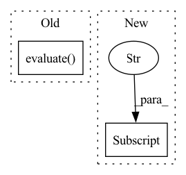

Pattern ID :24510

Before Change
print(pororo_eval_results)
else:
eval_results = trainer.evaluate()
eval_results = eval_results[0]
results = evaluation(args)
eval_results["exact_match"] = results["EM"]["value"]
eval_results["f1"] = results["F1"]["value"]
After Change
metric_results["pororo_predictions"]["f1"] = results["F1"]["value"]
print("PORORO EVAL RESULT")
print(metric_results["pororo_predictions"])
if args.train.do_eval and args.report:
report_reader_to_slack(args, p.basename(__file__), metric_results["predictions"], use_pororo=False)
In pattern: SUPERPATTERN
Frequency: 3
Non-data size: 2
Instances
Fragment ID: 76235387
Project Name: vumblebot/odqa_baseline_code
Commit Name: f907c93e8e3cc4a650f9f2d1bf243c69edbaff17
Time: 2021-05-17
Author: ticonhi@naver.com
File Name: run.py
M Class Name: AnonimousClass
N Class Name: AnonimousClass
M Method Name: train_reader(1)
N Method Name: train_reader(1)
M Parent Class:
N Parent Class:
M File Name: run.py
N File Name: run.py
M Start Line: 19
M End Line: 72
N Start Line: 19
N End Line: 72
'>
Before Change
line0 = repo.add_line("0", DummyModel)
model = DummyModel()
model.evaluate()
line0.save(model)
hv = HistoryViewer(repo)
After Change
def test_run(model_repo, dummy_model):
dummy_model.evaluate()
model_repo["0"].save(dummy_model)
hv = HistoryViewer(model_repo)
hv.plot("acc")
'>
Fragment ID: 76235386
Project Name: oxid15/cascade
Commit Name: 2f5ce85d297cf4975de845e44952c7783fcad0e6
Time: 2022-07-05
Author: villeman.5@yandex.ru
File Name: cascade/tests/test_history_viewer.py
M Class Name: AnonimousClass
N Class Name: AnonimousClass
M Method Name: test_run(2)
N Method Name: test_run(0)
M Parent Class:
N Parent Class:
M File Name: cascade/tests/test_history_viewer.py
N File Name: cascade/tests/test_history_viewer.py
M Start Line: 31
M End Line: 40
N Start Line: 28
N End Line: 32
'>
Before Change
@overrides
def evaluate(self, arch: ArchaiModel, dataset: DatasetProvider,
budget: Optional[float] = None) -> float:
return super().evaluate(arch, dataset, budget)
After Change
@overrides
def evaluate(self, arch: ArchaiModel, dataset: DatasetProvider,
budget: Optional[float] = None) -> float:
model = self._load_and_prepare(arch.metadata["config"])
with tempfile.NamedTemporaryFile() as tmp:
export_to_onnx(model, Path(tmp.name), task="causal-lm",
'>
Fragment ID: 76235380
Project Name: microsoft/archai
Commit Name: 43554986f8e0768c03baccdeddd4ef745466a1ae
Time: 2022-12-16
Author: pierokauffmann@gmail.com
File Name: archai/nlp/objectives/transformer_flex_latency.py
M Class Name: TransformerFlexOnnxLatency
N Class Name: TransformerFlexOnnxLatency
M Method Name: evaluate(4)
N Method Name: evaluate(4)
M Parent Class: Objective
N Parent Class: Objective
M File Name: archai/nlp/objectives/transformer_flex_latency.py
N File Name: archai/nlp/objectives/transformer_flex_latency.py
M Start Line: 29
M End Line: 29
N Start Line: 47
N End Line: 53